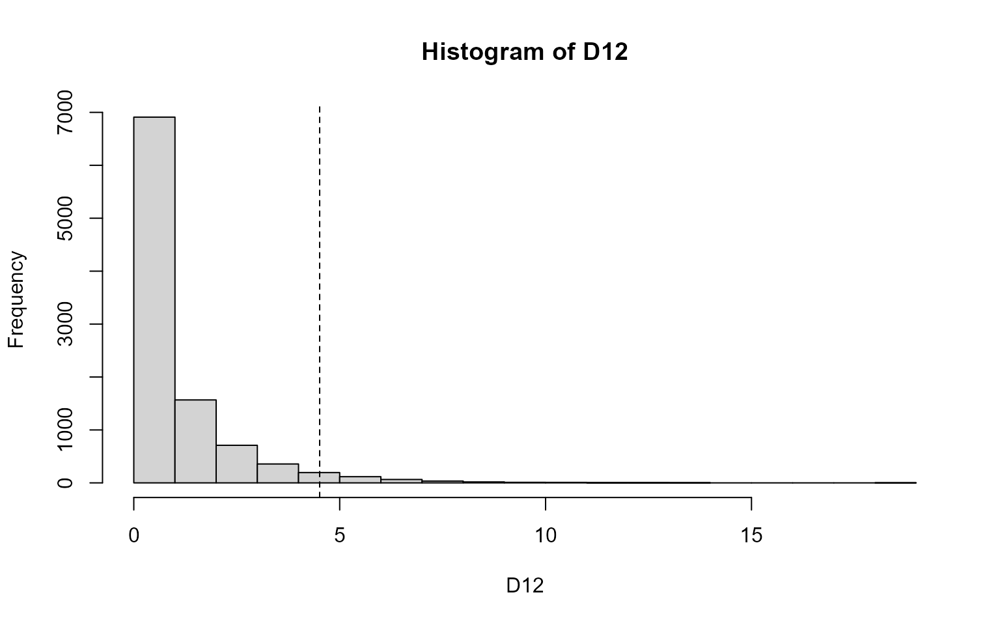

5. GLMの尤度比検定と検定の非対称性
- 検定についての章
- 尤度比検定：ネストしてるモデル同士の比較
- パラメトリック検定を「正規分布を使った」とするのは誤用
5.1 統計学的な検定のわくぐみ
- 図5.1
- 統計モデルの検定とAICによるモデル選択の比較
- 統計モデル検定の帰無仮説・対立仮説の考え方次第では、結構似てる
- あるモデルを帰無仮説、別のモデルを対立仮説と考える
- ただし、パラメータを推定した後の手続きは異なる
- 帰無仮説の特別扱い
- Neyman-Peason（ネイマン・ピアソン）
- 帰無仮説を真のモデルを考え、
- 真のモデルから得られる検定統計量を調べて「ありがちな範囲」を設定
- 対立仮説モデルから得られる検定統計量が上の範囲内かどうかを確認
5.2 尤度比検定の例題：逸脱度の差を調べる
- 第3章の種子数データを使う
- 統計モデル：\(\lambda_i=exp(\beta_1+\beta_2x_i)\)を平均とするポアソン分布GLM
- 一定モデル：\(y_i\sim \beta_1\)
- xモデル：\(y_i\sim \beta_1+\beta_2x_i\)
- 一定モデルが帰無仮説
- 逸脱度は算出済み
- 一定モデル：\(D=475.3\)
- xモデル：\(D=470.8\)
- 差は4.5くらい
- 尤度比
- \(\frac{L_1^*}{L_2^*}=\frac{一定モデルの最大尤度}{xモデルの最大尤度}=\frac{対数尤度のexpだからexp(-237.6)}{exp(-235.4)}\)
- ただし、このままは使わず、尤度比の対数をとって-2をかける
- \(log(\frac{L_1^*}{L_2^*})=log(L_1^*)-log(L_2^*)\)に-2をかける
- 上の式は逸脱度Dの差に等しい
- つまり、尤度比は逸脱度Dの差のこと
- 逸脱度の差（尤度比）を\(\Delta{D}_{1,2}\)と表す
- 尤度比4.5が（逸脱度が）改善されたと言っていいのかどうかという問題を考える
5.3 2種類の過誤と統計学的な検定の非対称性
- Neyman-Pearsonで考えるので、モデルを帰無仮説と対立仮説として考える
- 帰無仮説：一定モデル
- 対立仮説：xモデル
- このとき、「帰無仮説が正しくなければ対立仮説は正しい」は真だけど、対偶の「対立仮説が正しくなければ帰無仮説は正しい」は真ではない→5.5で詳しく
- 表5.2に第一種の過誤と第二種の過誤の話
- どちらの過誤も防ぐのは大変
- Neyman-Pearson：第一種の過誤を避けることに専念しよう
- 帰無仮説（一定モデル）を正しいものだと仮定
- 観測データに一定モデルをあてはめ、最大対数尤度となるパラメータを決定（＝2.06）。これを真のモデルと同じとする。
- 真のモデル（\(\hat{\beta_1}=2.06\)からデータを繰り返し生成。データに対して一定モデルとxモデルを当てはめ、\(\Delta{D_{1,2}}\)を得て、その分布をみる
- 分布から\(\Delta D_{1,2}\geqq4.5\)となる確率\(P\)がわかるので評価できる
- 第一種過誤の重視＝検定の非対称性
5.4 帰無仮説を棄却するための有意水準
- \(P\)値：\(\Delta D_{1,2}\geqq4.5\)となる確率
- 第一種の過誤をおかす確率
- \(P\)値が大きい＝そのくらいの差はよくあること＝帰無仮説を棄却できない
- \(P\)値が小さい＝その差は滅多にない＝帰無仮説を棄却する（真のモデルとは思えないから）
- 大きい/小さいの基準は？
- 有意水準\(\alpha\)を事前に決めておく
- \(P\geqq\alpha\)：帰無仮説は棄却できない
- \(P<\alpha\)：帰無仮説を棄却できる
- \(\alpha\)はどう決める？
- まあ何となく
- 伝統的に
5.4.1 方法(1) 汎用性のあるパラメトリックブートストラップ法
- \(P\)値を評価するための分布があれば良いことになる
- まず1つめ：パラメトリックブートストラップ法（BP法）
- 乱数発生によるシミュレーションでデータたくさん生成
- 以下、Rでの手順
- 一定モデルとxモデルの最尤推定を実施し、結果をfit1とfit2に取得
- 2つのモデルの残差逸脱度（変数deviance)が分かるので、その差から\(\Delta D_{1,2}\)を算出。これが尤度比。
- 一定モデルから推定された平均種子数（推定された\(\beta_1\)をexpに）、それをラムダとしてrpois()でデータを100個生成
- ここで本ではrpois()に渡す値をmean(d$y)と計算してるんだけど、ちょっとしっくりこない。
- 生成した100個の値に対して、一定モデルとxモデルを適用し、その結果から尤度比を算出
- 以上を1000回くらい繰り返す
- 実装してみよう
- 下の結果から、「逸脱度の差(4.51)のP値は0.035であり、有意水準0.05よりも小さいので帰無仮説を棄却し、xモデルを採択」と言える
dat<-read.csv('kubobook_2012-2/poisson/data3a.csv')
dat$f<-as.factor(dat$f)
f1<-glm(y~1, data=dat, family=poisson)
f2<-glm(y~1+x, data=dat, family=poisson)
d1<-f1$deviance-f2$deviance
#nrp=10000
#for (rp in 1:nrp){
# dat$rnd<-rpois(100, lambda=mean(dat$y))
# fit1<-glm(rnd~1, data=dat, family=poisson)
# fit2<-glm(rnd~x, data=dat, family=poisson)
# d[rp]<-fit1$deviance-fit2$deviance
#}
# 上のは遅くてきついので、本を参考に関数を作成
# datを引数として逸脱度の差を返す関数
get.D<-function(dat){
nsample<-nrow(dat)
ymean<-mean(dat$y)
dat$rnd<-rpois(nsample, lambda=mean(dat$y))
fit1<-glm(rnd~1, data=dat, family=poisson)
fit2<-glm(rnd~x, data=dat, family=poisson)
fit1$deviance-fit2$deviance # ここが戻り値になる？
}
# datと繰り返し回数を引数として、get.Dを繰り返す関数
pb<-function(dat, n.bs){
replicate(n.bs, get.D(dat))
}
nr=10000
D12<-pb(dat, n.bs=nr)
summary(D12)## Min. 1st Qu. Median Mean 3rd Qu. Max.
## 0.0000 0.1053 0.4482 1.0083 1.3509 13.7952hist(D12)
abline(v=d1, lty=2)
sum(D12>d1)/nr## [1] 0.03455.4.2 方法(2) \(\chi^2\)分布を使った近似計算法
- PB法はどんなときにも使えるけど、シミュレーションが必要
- 近似計算でもっと楽にやれる場合もある
- Rを使った実施例
- 逸脱度の差が自由度1の\(\chi^2\)分布に近似（する場合がある）
- anova関数の引数にfit1(glmの一定モデル結果)とfit2(xモデル結果)を渡して逸脱度の分析
- anova()
- 1つあるいは複数のfitted model objectの分散（あるいは逸脱度）分析を計算
- lmやglmの結果を引数とする
- anova()
- 有意確率が得られる。ただしPB法の確率と一致しない。サンプル数が小さい場合、\(\chi^2\)には近似しにくい
- サンプル数が小さいときはPB法を使うべき
- データの分布が等分散正規分布なら、t検定や分散比を統計量としたF検定（分散分析）も使えるよ。
fit1<-glm(y~1, data=dat, family=poisson)
fit2<-glm(y~x, data=dat, family=poisson)
anova(fit1, fit2, test='Chisq')## Analysis of Deviance Table
##
## Model 1: y ~ 1
## Model 2: y ~ x
## Resid. Df Resid. Dev Df Deviance Pr(>Chi)
## 1 99 89.507
## 2 98 84.993 1 4.5139 0.03362 *
## ---
## Signif. codes: 0 '***' 0.001 '**' 0.01 '*' 0.05 '.' 0.1 ' ' 15.5 「帰無仮説を棄却できない」は「差がない」ではない
- \(P<\alpha\)の場合、帰無仮説を棄却する
- じゃあ\(P\geqq\alpha\)の場合は？
- 「帰無仮説は正しい」ではない
- 対偶はなりたたない
- どちらも採択しない。判断を保留するのが正しい。
- 「帰無仮説は正しい」ではない
- Neyman-Pearsonのわくぐみの非対称性（5.3節）
- 第一種の過誤を棄却することを頑張ってる分、逆は弱い
- 第二種の過誤の確率を\(P_2\)として評価することも可能
- ただし、\(P_2\)を使って何か、というやり方が決まっているわけではない
- 検定力(\(1-P_2\))＝帰無仮説が誤りだったときに、それを正しく棄却する確率として使うことが多い
- 実験研究では事前に検定力を定量的に決めることが望まれる
- A prioriとかPost hocとか
- G*Power使ったりとか
- 水本・竹内, 2010
5.6 検定とモデル選択、そして推定された統計モデルの解釈
- 尤度比検定とモデル選択：どちらも逸脱度（\(logL^*\times -2\)）
- モデル選択
- 目的は「良い予測をするモデル」
- 予測の良さ＝平均対数尤度
- 平均対数尤度＝最大対数尤度